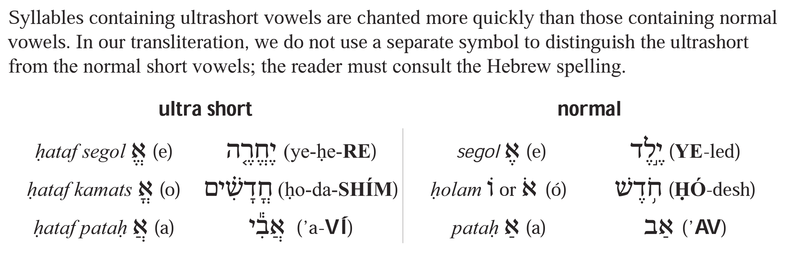
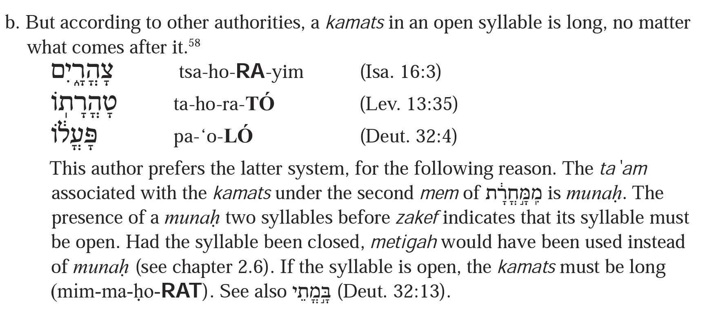
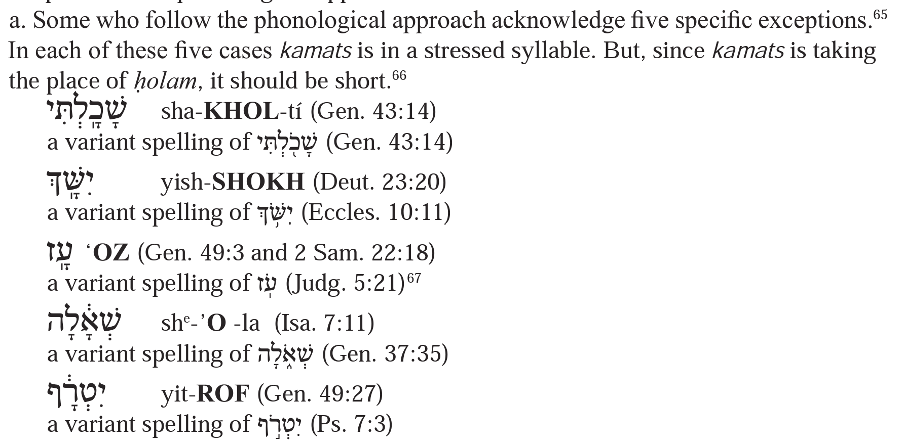
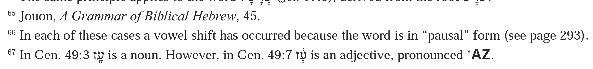

| 235 | וְהָאָ֖רֶץ | ve-ha-’a-rets
ve-ha-’a-rets 1 | G2:1 |
| 236 | וַיֶּאְסֹ֖ר | vay-ye’-sór
vay-ye’-sór 1 | E14:6 |
| 236 | וְלָראוּבֵנִ֨י 2 | ve-la-ru-vé-ní | D3:16 |
| 242 | עׇזִּ֤י 1 | ‘oz-zí | (E15:2) 2 |
| 242 | אָ֣ב | ‘av
’av 3 | (G44:20) |
| 242 | אַב(־הֲמ֥וֹן) 4 | ‘av
’av 5 | (G17:5) |
| 243 | חֹ֥דֶשׁ 1 | ḥó-desh | (G29:14) |
| 245 | כַּבֵּ֥ד | kab-béd | E20:12 1 |
| 246 | שֶׁשְּׁזָפַ֖תְנִי 1 | shesh-she-za-fat-ní
shesh-she-za-fat-ní 2 | S1:6 |
| 248 | הִֽתְקַבְּצוּ֙ | hit-kab-be-tsu
hit-kab-be-tsu 1 | Je49:14 |
| 265 | אַ֨תְּ | ’at
’att 1 | 1K2:22 |
| 266 | הַדְּבָרִ֣ים | had-de-va-rím | G15:1 1 |
| 267 | הַֽמְדַבֵּ֥ר | ha-me-dab-bér
ham-dab-bér 1 | G45:12 |
| 267 | הַלְוִיִּֽם׃ 2 | ha-le-viy-yim
hal-viy-yim 3 | 2C24:5 |
| 267 | בִּנְבִיאִ֔ים | bin-ví-’ím | ? 4 |
| 268 | וּֽדְמֵה־לְךָ֤ | [not-provided]
ud-mé-le-kha 1 | S8:14 |
| 268 | וּֽסְגֹ֥ר | [not-provided]
us-gór 2 | I26:20 |
| 268 | וּֽבְשׇׁכְבְּךָ֖ | u-ve-shokh-be-kha
uv-shokh-be-kha 3 | D6:7 |
| 271 | וַיָּ֣קׇם | vay-ya-kom | G21:32 1 |
| 271 | בְעׇזְּךָ֖ | ve-oz-ze-kha
ve-‘oz-ze-kha 2 | E15:13 |
| 272 | לְחׇדְשֵׁ֖י | ḥod-shé
le-ḥod-shé 1 | E12:2 |
| 272 | יַֽעֲזׇב־אִ֔ישׁ | ya-‘a-zov-ísh
ya-‘a-zov-’ísh 2 | G2:24 |
| 273 | מִֽמָּחֳרָ֔ת 1 | mim-ma-ḥo-rat | G19:34 |
| 273 | בָּ֣מֳתֵי | [not-provided]
ba-mo-té 2 | D32:13 |
| 274 | רָאשִֽׁים׃ 1 | ra-shím | (G2:10) |
| 275 | שָׁכָֽלְתִּי׃ | sha-khol-tí
sha-khal-tí 1 | G43:14 |
| 275 | יִשָּֽׁךְ׃ | yish-shokh
yish-shakh 2 | D23:20 |
| 275 | עָֽז׃ | ‘oz
‘az 3 | G49:3 4 |
| 275 | שְׁאָ֔לָה | she-’o-la
she-’a-la 5 | I7:11 |
| 275 | יִטְרָ֔ף | yit-rof
yit-raf 6 | G49:27 |
| 276 | עֵדְוֺתָ֤יו 1 | ‘éd-vó-tav
‘é-de-vó-tav 2 | 2K23:3 |
| 277 | וְקֹוֵ֥י 1 | ve-kó-vé | Ps37:9 |
| 278 | יְהֹוָ֥ה | ’a-dó-nai
’a-dó-nay 1 | G2:4 |
| 283 | וְאֶת־כׇּל־אֲשֶׁר־בָּ֔ם | ve-’et-kol-’a-sher-bam
ve-’et-kol-’a-sher-bam 1 | E20:11 |
| 289 | יְשִֽׂמְךָ֣ | ye-sí-me-kha
ye-sim-kha | G48:20 |
| 289 | וְהוֹתִרְךָ֤ | ve-hó-tí-re-kha
ve-hó-tir-kha | D28:11 |
| 289 | גְּנֻֽבְתִ֣י | ge-nu-ve-tí
ge-nuv-tí | G31:39 |
| 290 | בָֽתֵּיהֶם֙ | vat-té-hem | Je6:12 1 |
| 291 | וַיִּֽרְא֣וּ | vay-yí-re-’u
vay-yir-’u | Js4:14 |
| 292 | וַֽיְהִי־אֽוֹר׃ | vay-hí
vay-hí | G1:3 |
| 292 | וַֽיְחִי־תֶ֖רַח | vay-ḥí
vay-ḥí | G11:26 |
| 303 | לַֽאדֹנָי֙ 1 | la-dó-nay | G18:30 |
| 308 | מִטּ֥וֹב | mit-tóv | G31:24 1 |
| 308 | מִבֵּיתֶ֔ךָ | mib-bé-te-kha | 2S12:11 2 |
| 309 | שְׁתֵּ֣י | shté
she-té 1 | G4:19 |
| 309 | אֹיְבֶֽךָ׃ | ó-ye-ve-kha
’ó-ye-ve-kha 2 | D28:53 |
Notes
235-1
| 235 | וְהָאָ֖רֶץ | ve-ha-’a-rets
ve-ha-’a-rets 1 | G2:1 |
Presumably Jacobson just forgot to superscript the “e”, i.e. presumably this is not a real disagreement in transcription, but rather just a typo.
236-1
| 236 | וַיֶּאְסֹ֖ר | vay-ye’-sór
vay-ye’-sór 1 | E14:6 |
Presumably Jacobson just accidentally misplaced the stress, i.e. presumably this is not a real disagreement in transcription, but rather just a typo.
236-2
| 236 | וְלָראוּבֵנִ֨י 2 | ve-la-ru-vé-ní | D3:16 |
Jacobson points this word וְלָרֻאוּבֵנִ֨י, i.e. with a qubuts under the resh. In my opinion this is excessive adherence to ל because ל is anomalous here. No reader-friendly edition will be pointed that way. Editions without this qubuts, i.e. editions that are reader-friendly with respect to this particular issue, include Koren, Simanim, Keter Yerushalayim, the 1999 JPS HET, and Dotan’s BHL (main text). (As one would expect, the form with qubuts appears in Appendix A of Dotan’s BHL.)
242-1, 242-2
| 242 | עׇזִּ֤י 1 | ‘oz-zí | (E15:2) 2 |
242-1
In this first appearance (page 242), this word appears without an accent, i.e. as עׇזִּי. Subsequently, it appears with mahapakh.
242-2
In this first appearance (page 242), this word appears without a locale reference, by design. Subsequently, it appears with locale reference Exod. 15:2.
242-3
Presumably Jacobson just accidentally used the wrong type of single quote, i.e. presumably this is not a real disagreement in transcription, but rather just a typo.
242-4, 242-5
| 242 | אַב(־הֲמ֥וֹן) 4 | ‘av
’av 5 | (G17:5) |
242-4
In parenthesis, I have added ־הֲמ֥וֹן since I think it is relevant that the syllable is unstressed. Just having the monosyllabic word אַב without an accent is ambiguous as to whether the accent’s absence is relevant. For example, in a similar context above, אֶל and אֵל appear without an accent but presumably the accent’s absence is not relevant.
242-5
Presumably Jacobson just accidentally used the wrong type of single quote, i.e. presumably this is not a real disagreement in transcription, but rather just a typo.
243-1
| 243 | חֹ֥דֶשׁ 1 | ḥó-desh | (G29:14) |
The word חֹ֥דֶשׁ seems like a weird choice. It seems like a word with qamats qatan would have been a better choice. Maybe קׇדְשִֽׁי׃ or similar? Here is the context in Jacobson:

The context is contrasting ultra-short vowels (i.e. ḥataf vowels) with short vowels, even though the table in question labels the short vowels as “normal” vowels. (The text leading into this table contrasts ultra-short vowels with “normal short” vowels, leading me to believe that in this context, the “normal” label in the table means “short but not ultra-short.”)
In this context, the question becomes: ḥataf segol is to segol as ḥataf qamats is to what? Or, equivalently, ḥataf pataḥ is to pataḥ as ḥataf qamats is to what? I think qamats qatan is the best answer.
Another argument in favor of qamats qatan is that the text leading into this table says “we do not use a separate symbol to distinguish the ultrashort from the normal short vowels.” But it then proceeds to show separate symbols for ḥataf qamats and its supposed normal short cousin, ḥolam. (These symbols being o and ó respectively.)
245-1
| 245 | כַּבֵּ֥ד | kab-béd | E20:12 1 |
This locale reference (Exod. 20:12) uses BHS verse numbering; in MAM and many other editions, the locale reference is Exod 20:11.
246-1, 246-2
| 246 | שֶׁשְּׁזָפַ֖תְנִי 1 | shesh-she-za-fat-ní
shesh-she-za-fat-ní 2 | S1:6 |
246-1
Jacobson points this word שֶׁשֱּׁזָפַ֖תְנִי, i.e. with a ḥataf segol under the second shin. In my opinion this is excessive adherence to ל because ל is anomalous here. No reader-friendly edition will be pointed that way. Editions with a sheva instead of this ḥataf segol, i.e. editions that are reader-friendly with respect to this particular issue, include Koren and Keter Yerushalayim. Editions with ḥataf segol, i.e. editions adhering to ל, include the 1999 JPS HET and Dotan’s BHL (main text). So, although in general I would classify HET and BHL as fairly reader-friendly, with respect to this particular issue, whether by design or accident, I would call them non-reader-friendly.
246-2
This is not an “apples to apples” comparison: the transcriptions likely only differ because the source Hebrew differs for this word. See the note on the Hebrew.
248-1
| 248 | הִֽתְקַבְּצוּ֙ | hit-kab-be-tsu
hit-kab-be-tsu 1 | Je49:14 |
Presumably Jacobson just forgot to superscript the “e”, i.e. presumably this is not a real disagreement in transcription, but rather just a typo.
265-1
This transcription difference should be ignored, as it merely reflects my having an outdated version of Al-Hatorah.
266-1
| 266 | הַדְּבָרִ֣ים | had-de-va-rím | G15:1 1 |
There is typo in Jacobson identifying the locale reference as Gen. 1:51 instead of 15:1.
267-1
| 267 | הַֽמְדַבֵּ֥ר | ha-me-dab-bér
ham-dab-bér 1 | G45:12 |
This transcription difference represents a substantive issue. My transcription is based on the sheva distinctions in the Al-Hatorah edition of MAM. It is unclear whether Jacobson or Al-Hatorah represents the better choice of sheva quality here. Indeed it is unclear whether there is a single best choice: they may each represent two equally valid options.
267-2, 267-3
| 267 | הַלְוִיִּֽם׃ 2 | ha-le-viy-yim
hal-viy-yim 3 | 2C24:5 |
267-2
Jacobson points this word הַֽלְוִיִּֽם, i.e. with a gaʿya on הַ. MAM lacks such a gaʿya not only in this location (2Chr. 24:5) but in all locations where words ending in לְוִיִּם appear.
267-3
This is not an “apples to apples” comparison: the transcriptions likely only differ because the source Hebrew differs for this word. See the note on the Hebrew.
267-4
| 267 | בִּנְבִיאִ֔ים | bin-ví-’ím | ? 4 |
Jacobson does not provide a locale reference for בִּנְבִיאִ֔ים and I cannot find one. As such, perhaps לִנְבִיאִ֔ים in Amos 2:11 would be a better example, assuming it illustrates the same point?
268-1
| 268 | וּֽדְמֵה־לְךָ֤ | [not-provided]
ud-mé-le-kha 1 | S8:14 |
Jacobson does not provide a technical transcription for this word. It is presented merely as one of 3 examples of words whose sheva “quality” is disputed. The question is: what the quality of a sheva following an initial shuruq where that shuruq is marked with a gaʿya? Jacobson does not explicitly state his preferred answer to this question. He does, however, later provide a transcription of one of these 3 words, וּֽבְשׇׁכְבְּךָ֖. That transcription has the sheva in question as vocal. So, if we had to infer his preference in general from that one transcription, we would infer his preference to be that the quality of such a sheva is vocal. This preference differs from the sheva quality chosen in the Al-Hatorah edition of MAM: Al-Hatorah has a silent rather than vocal sheva here.
268-2
| 268 | וּֽסְגֹ֥ר | [not-provided]
us-gór 2 | I26:20 |
See note on וּֽדְמֵה־לְךָ֤ (Songs 8:14).
268-3
| 268 | וּֽבְשׇׁכְבְּךָ֖ | u-ve-shokh-be-kha
uv-shokh-be-kha 3 | D6:7 |
Jacobson does not provide a technical transcription for this word when it first appears, on page 268. On page 268 it is presented merely as one of 3 examples of words whose sheva “quality” is disputed. See note on וּֽדְמֵה־לְךָ֤ (Songs 8:14). But Jacobson does provide a transcription later, on page 273.
This transcription difference represents a substantive issue. My transcription is based on the sheva distinctions in the Al-Hatorah edition of MAM. It is unclear whether Jacobson or Al-Hatorah represents the better choice of sheva quality here. Indeed it is unclear whether there is a single best choice: they may each represent two equally valid options.
271-1
| 271 | וַיָּ֣קׇם | vay-ya-kom | G21:32 1 |
The same word (וַיָּ֣קׇם), down to the accent (munaḥ) appears later on the same page (271), and on page 272. But in those later two places, a different locale reference is used: Gen. 22:3. I assume this is unintentional.
271-2
| 271 | בְעׇזְּךָ֖ | ve-oz-ze-kha
ve-‘oz-ze-kha 2 | E15:13 |
Presumably Jacobson just forgot to include an opening single quote for ayin, i.e. presumably this is not a real disagreement in transcription, but rather just a typo.
272-1
| 272 | לְחׇדְשֵׁ֖י | ḥod-shé
le-ḥod-shé 1 | E12:2 |
Presumably Jacobson just forgot to transcribe the לְ prefix, i.e. presumably this is not a real disagreement in transcription, but rather just a typo.
272-2
| 272 | יַֽעֲזׇב־אִ֔ישׁ | ya-‘a-zov-ísh
ya-‘a-zov-’ísh 2 | G2:24 |
Presumably Jacobson just forgot to include a closing single quote (apostrophe) for alef, i.e. presumably this is not a real disagreement in transcription, but rather just a typo.
273-1
| 273 | מִֽמָּחֳרָ֔ת 1 | mim-ma-ḥo-rat | G19:34 |
Jacobson points this word מִֽמָּ֣חֳרָ֔ת, i.e. with a munaḥ under the second mem. Jacobson does not provide a locale reference for this word and I cannot find one with this particular munaḥ pointing. As such, perhaps מֵאׇ֣הֳלֵיהֶ֔ם in Josh. 3:14 would be a better example, assuming it illustrates the same point?
Getting back to this mysterious מִֽמָּ֣חֳרָ֔ת, in Jacobson this word’s second mem is pointed with a qamats that should be interpreted as ambiguous with regard to the gadol/qatan distinction. This pointing is expected since in Jacobson the qamats mark is always intentionally ambiguous. In the table above, in this and all other cases, we show MAM’s pointing, which distinguishes qamats “quality” (gadol/qatan). In particular, in the table above, we show MAM’s pointing for the Sephardic (ס) variant of this word. In this variant, the second mem is pointed with qamats gadol.
In Jacobson, this word is is discussed in the body text as if it had already been mentioned (e.g. as if it had already appeared in the table above) but it has not already been mentioned. Here is the context in Jacobson:


273-2
| 273 | בָּ֣מֳתֵי | [not-provided]
ba-mo-té 2 | D32:13 |
Although Jacobson does not provide a technical transcription for this word, judging from context, ba-mo-té is implied (as opposed to bo-mo-té).
274-1
| 274 | רָאשִֽׁים׃ 1 | ra-shím | (G2:10) |
Jacobson points this word רָאשִׁים, i.e. without an accent.
275-1
| 275 | שָׁכָֽלְתִּי׃ | sha-khol-tí
sha-khal-tí 1 | G43:14 |
This transcription difference represents a substantive issue. Jacobson notes this as one of five exceptions to the phonological approach. Here is the context in Jacobson:


275-2
| 275 | יִשָּֽׁךְ׃ | yish-shokh
yish-shakh 2 | D23:20 |
See note on שָׁכָֽלְתִּי׃ (Gen. 43:14).
275-3, 275-4
275-3
See note on שָׁכָֽלְתִּי׃ (Gen. 43:14).
275-4
Jacobson also provides the locale reference 2 Sam. 22:18
275-5
| 275 | שְׁאָ֔לָה | she-’o-la
she-’a-la 5 | I7:11 |
See note on שָׁכָֽלְתִּי׃ (Gen. 43:14).
275-6
| 275 | יִטְרָ֔ף | yit-rof
yit-raf 6 | G49:27 |
See note on שָׁכָֽלְתִּי׃ (Gen. 43:14).
276-1, 276-2
| 276 | עֵדְוֺתָ֤יו 1 | ‘éd-vó-tav
‘é-de-vó-tav 2 | 2K23:3 |
276-1
Jacobson points this word עֵדְוֹתָ֤יו, i.e. with what looks like a ḥolam malei dot on the vav even though a consonant sound rather than a vowel sound is required here. Presumably this odd pointing is to show that in some non-reader-friendly editions there can be ambiguity as to whether a ḥolam dot on a vav is a ḥolam malei dot or a ḥolam ḥaser dot. In the table above, in this and all other cases, we show MAM’s pointing, which distinguishes ḥolam dot “quality” (ḥaser/malei) on vav. Of course, to actually see these distinctions, a reasonably-capable font is required.
276-2
This transcription difference represents a substantive issue. My transcription is based on the sheva distinctions in the Al-Hatorah edition of MAM. It is unclear whether Jacobson or Al-Hatorah represents the better choice of sheva quality here. Indeed it is unclear whether there is a single best choice: they may each represent two equally valid options.
277-1
| 277 | וְקֹוֵ֥י 1 | ve-kó-vé | Ps37:9 |
Jacobson points this word וְקוֵֹ֥י, i.e. with what looks like a ḥolam malei dot on the vav even though the vav is already carrying tsere and merkha. Presumably this odd pointing is to show that in some non-reader-friendly editions, the ḥaser/malei ambiguity of the ḥolam dot can reach all the way back to the letter before the vav, which in this case is a qof.
Presumably Jacobson includes this odd pointing and that of עֵדְוֹתָ֤יו in order to show that that there may be no typographic distinctions between the following three cases:
- ḥolam ḥaser dot on a letter before a vav
- ḥolam malei dot on a vav
- ḥolam ḥaser dot on a vav
(Or, even when such distinctions exist, they may be hard to observe.)
278-1
| 278 | יְהֹוָ֥ה | ’a-dó-nai
’a-dó-nay 1 | G2:4 |
Presumably Jacobson just accidentally used ai here rather than the expected ay.
283-1
| 283 | וְאֶת־כׇּל־אֲשֶׁר־בָּ֔ם | ve-’et-kol-’a-sher-bam
ve-’et-kol-’a-sher-bam 1 | E20:11 |
Presumably Jacobson just forgot to superscript the “e”, i.e. presumably this is not a real disagreement in transcription, but rather just a typo.
290-1
| 290 | בָֽתֵּיהֶם֙ | vat-té-hem | Je6:12 1 |
There is typo in Jacobson identifying the locale reference as Jer. 16:12 instead of 6:12.
303-1
| 303 | לַֽאדֹנָי֙ 1 | la-dó-nay | G18:30 |
Footnote callout says 145, which seems odd. The callout for 145 appears between callouts for 114 and 115. The callouts for 114 and 115 correspond to a footnote, but these are the only two footnotes on this page. I.e., there is no footnote corresponding to the callout for 145.
308-1
| 308 | מִטּ֥וֹב | mit-tóv | G31:24 1 |
There is typo in Jacobson identifying the locale reference as 2 Sam 12:10 instead of Gen. 31:24. I.e. this is sort of (but only sort of) swapped with the locale reference below. The Gen. locale reference is correct but misplaced; the 2 Sam. locale reference is not only misplaced, but also one verse off (should be 12:11 not 12:10).
308-2
| 308 | מִבֵּיתֶ֔ךָ | mib-bé-te-kha | 2S12:11 2 |
There is typo in Jacobson identifying the locale reference as Gen. 31:24 instead of 2 Sam 12:11. I.e. this is sort of (but only sort of) swapped with the locale reference above. The Gen. locale reference is correct but misplaced; the 2 Sam. locale reference is not only misplaced, but also one verse off (should be 12:11 not 12:10).
309-1
| 309 | שְׁתֵּ֣י | shté
she-té 1 | G4:19 |
This transcription difference represents a substantive issue. My transcription is based on the sheva distinctions in the Al-Hatorah edition of MAM. It is unclear whether Jacobson or Al-Hatorah represents the better choice of sheva quality here. Indeed it is unclear whether there is a single best choice: they may each represent two equally valid options.
309-2
| 309 | אֹיְבֶֽךָ׃ | ó-ye-ve-kha
’ó-ye-ve-kha 2 | D28:53 |
Presumably Jacobson just forgot to include a closing single quote (apostrophe) for alef, i.e. presumably this is not a real disagreement in transcription, but rather just a typo.